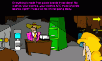
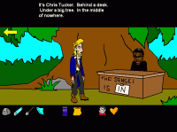
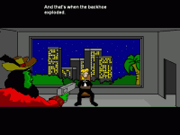
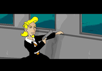

|
Avast me hearties! It's me own original fan-games that be starting this whole mess!
Based on LucasArts' "Monkey Island" series by Ron Gilbert, both games were designed on Klik-n-Play and animated with Paint on an older Windows XP machine. For years after, they became unplayable on modern machine until friend of the site, Weitze Mink, created a special launcher that contains both games in one. Now both games are available as a single download with new special features like chapter selection and - best of all - SAVE GAMES.
About the Games
"The Devil's Triangle" follows the hapless Guybrush Threepwood after the events of "Secret of Monkey Island" as he journeys into the heart of the Bermuda Triangle with a misfit crew and a sinister new villain on his heels. This is an original story based on one of my old fan-fictions and takes place throughout four chapters.
"M:I-2: LeChuck's Revenge" is a fast, furious "demake" of the original "Monkey Island 2: LeChuck's Revenge". Returning to the tri-island area with glorious low-res "Klik 'n Play" pastiche, you take wannabe pirate Guybrush Threepwood on his journey to find the lost treasure of Big Whoop. But THIS TIME, you're up against bad movie parodies, pop music MIDIs, off-brand cameos, multiple endings, and too many Matrix jokes.
Downloading the Games
This new special launcher includes:
Both "The Devil's Triangle" and "M:I-2 LeChuck's Revenge" in a single executable launcher.
In-game GUI that allows you to continue chapters without leaving the game.
An ESC menu! Debug mode! A restart/repair button for all those pesky bugs.
SAVE FUNCTIONS! For the first time ever, you can save! You can load! Just like a normal adventure game!
That might be about it. That save feature really is the best.
Download the full saga here!
Original Downloads
Part 1: Scabb Island
Part 2: Two Map Pieces
Part 3: The One with all the Toffee
Part 4: Guybrush Kicks @$$
Part 4.5: The Endings
Extras
Full Walkthrough to be added
GameDev Interview on "Threepcast" Podcast
|




|